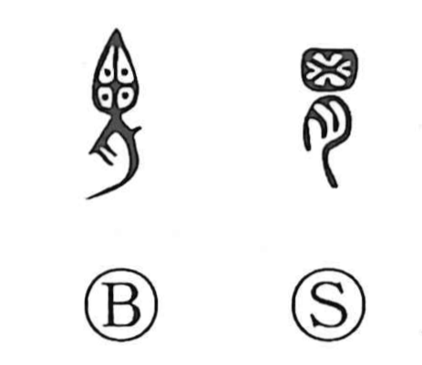

胃

Kun: | On: i
stomach
Explanation
胃 is a compound graph that sets a pictographic stomach atop the flesh radical 月. The upper 田-form sketches the organ itself, while 月, the meat/flesh sign, marks it as one of the body’s viscera. Accordingly, the character names the stomach. In archaic writing the 田-shape was sometimes shown with dots or small marks inside, suggesting the stomach’s contents; from this image of many things gathered within comes the nuance seen in words like 蝟集, evoking a crowd or swarm converging in one place.